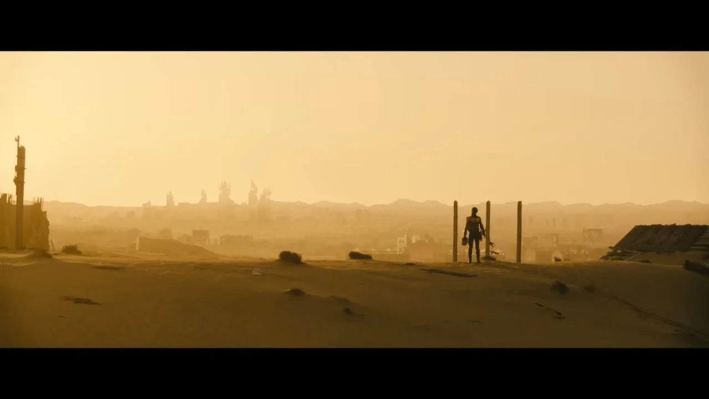

Fallout az egy poszt-apokaliptikus RPG (role playing game/ szerepjáték) videójáték-franchise és nemrég egy élőszereplős TV sorozat is készült belőle.

A játékok és a sorozat idejei előtt a világ több nagy válságon esett át, melyek a mi időnkben még nem történtek meg. A Második Világháború után a Hidegháború békésebben végződött. A Szovjetunió ebben az univerzumban fel sem bomlott. Az emiatti a béke és stabilitás miatt az emberek nyersanyag fogyasztása nagyon nagy mértékben nőtt. Ez egészen addig volt, amíg a világ kőolaj tartalékai nem voltak kritikálisan alacsony szinten, 2051-ig. Ez arra kényszerítette az Egyesült Államokat, hogy katonai inváziót intézzen Mexikó állama ellen, a kőolaj tartalékaik kinyerése érdekében. Ezután 2052 áprilisában, miután több kisebb állam pénzügyileg összeomlott az olajárak miatt (mely még jobban felvitte az olajárakat), hivatalosan elkezdődtek a Nyersanyag Háborúk az Európai Unió és a Közel-Keleti államok közt. A nemzetközi kapcsolatok teljes leépülésével 2052 júliusában feloszlik az ENSZ. Ez a háború limitált atomtámadásokkal ért véget, melyben több várost kiírtottak atomfegyverekkel, köztük a legnagyobb Tel-Aviv városa volt. Ez a háború és a végén ledobott atombombák még jobban fokotzták a nyersanyaghiányokat, ekkor már a világ legnagyobb hatalmai, az USA és Kína is érezték a hatását. Kína és az Egyesült Államok közötti kapcsolatok ellenségessé váltak miután az Egyesült Államok felfedezte a föld utolsó fontos kőolaj lelőhelyét Alaszkában. Kínai ejtőernyős csapatok leszálltak Alaszka fölött, ezzel elindul a Kínai-Amerikai háború 2066-ban. A kezdeti kínai előrenyomulásokat végül sikerül az Egyesült Államoknak visszanyomni, sőt még a kínai anyaföldet is sikerül megtámadniuk 2077-ben. A katonai és nyersanyagi összeomlás után Kína útnak indítja az atomrakétáit és tengeralattjáróit, ezzel elindítva a "Great War"-t, mely egy világszerte történő nukleáris csapásváltás volt, melyben a világ lakosságának túlnyomó része elhunyt vagy a radioaktivitás általi mutációk miatt egy agytalan lénnyé vált.
Fallout Wiki link itt